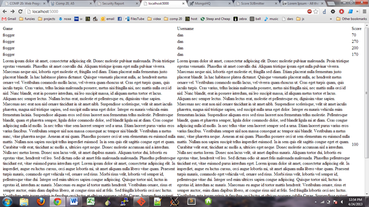
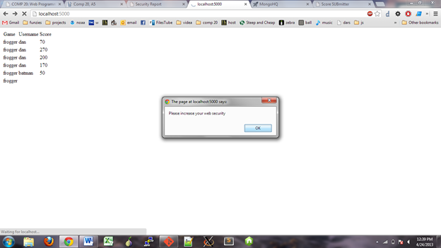

Introduction
Many online games now keep tally of the top ten high scores of any number of players. Having one site which can store all the scores of multiple games in an online database allows for easy implementation of high score storage. A website for game score data storage was created under the name Scorecenter. This data storage site allows for any site to post its game score by game title, the user’s name and finally the score. The site then further allows the user to pull the top ten scores associated with their game title. It is also possible to search all scores by username to find all of a user’s scores.
Scorecenter wished to have any security issues found so that its scores will be tracked with integrity and the site will have no issues running. This is important as games wish to report actual scores stored and if the database became corrupted then any game which pulled data from the site would be at risk for malfunction. Presented below is a listing of the security issues found with the current state of Scorecenter and some suggestions for improvement to the application.
Methodology
The site Scorecenter is available at: Scorecenter. When attacking the site I had access to the site’s source code.
To test the site the code was compiled and run locally so as to prevent any permanent damage to the site. The first test was to write a quick html file locally with a post form to the site. This file was then used as the main testing ground for errors. This checked if there was a “white list” of sites that were allowed to post to the database or if any site could access it. From here the site was tested on its handling of large text-blocks, html text and javascript. The results from searches were also analyzed for possible security issues. Finally, the source code was examined for further security issues. All of these issues were compiled and tested.
Software: As of this point the only software used to find these security issues are the html file written to POST to the site and the Sublime Text 2 to view the source code. Burpsuite was used to spider the site but no new information was found.
Abstracts of Findings
Information Output
This site outputs all information about the users when a request is made for a specific game. While this may initially seam innocuous, the site gives more information than is needed. The output information includes the user’s database id which is could have no use except for those with malicious intent.
Source Validation
Scorecenter allows for information from any site to be added to the database without any verification. Although at first this may seem useful as it allows for any new game to immediately use the site there are severe drawbacks. This allows for anyone to add ANYTHING to the database. This means that new tags not including game_titile, username, and score to be could be added with any data. Second, it creates a lack of integrity in the scores within the system as any person can merely POST a score to the system. This score would get added to the system and reported to any game using the system. However, even more seriously, it allows for people to easily exploit the security flaws inherit in a lack of input validation.
Input Validation
This issue is certainly the most serious offense of all present. It is important to note that this issue would remain a serious flow even if the source validation issue was addressed. The input is not checked in any manner for any of the many issues that could occur. The first issue that is the simplest is the type of input that is submitted. This can lead to corruption of data, in example if a person submitted the work “milk” as a score. The second issue with this is a lack of size check. This should both be implemented in the display and input. This is an issue as a username or game title of a large size destroys the appearance of site.Lastly, code can be submitted into the database which allows has many inherent issues. If this is submitted in the username or game title then it would be displayed on the site. This would result in possible addition of ads or popups. This is a further issue as if these values were returned to a game, it could corrupt the games as well as the site.
Issues
1:Too Much Output Information
Location: /highscores.json
Severity: Low -- Although the user id should not be output, there is a minimal amount a person could do with this information
Descirption: Anyone who requests the top ten scores for a game will recieve the id for every user that submited. The example text is
Resolution: Merely remove the line building the json string that includes the user id.
2:No Source Validation
Location: /submit.json
Severity: High -- This allows ANYONE to put ANYTHING in the database
Descirption: This issue allows any user to post to the site. using a mere html forum, even a local file such as this! This simple issue ruins the integrity of all stored codes for any game hosted on this site. This is a high threat because this also allows for issues 4 and 5 to be more readily taken advantage.
Resolution: FIx these lines of code:
response.header("Access-Control-Allow-Headers", "X-Requested-With");
by replacing the '*' with specific sites which are trusted to have this promission. The '*' allows all sites to access abuse this system.
3:No Text Length Check
Location: /submit.json
Severity: High -- This could mess up formatting or more importantly overload data storage size
Descirption: The user can enter a string of any length which could overload the data storage with size restrictions and cause issues with the web display. To test this a 5 paragraph lorum ipson text was inserted as both the game title and the username. The results are bellow.
It is easy to see the displacement of the table causing difficulty reading. If exclsively used for a name it could also be fed back to a game as data causing issues. If the length of the string of was long enough (perhapse the size of the phonebook) and submitted multiple times by a script it could fill the database quickly.
Resolution: Pick a maximum name and game length, perhapse 15. Check if the variable.length(); is less than or equal to 15. If and only if it is true submit the data to the database. As this is done on the web server after the information is recieved a tool like burpsuite will not be able to intercept and modify it.
4:No Input Type Valiation
Location: /submit.json
Severity: Low -- This allows the user to put in any type of data, which may effect appearance and minimal results. There will be minimal damage as a result from this type of attack.
Descirption: The example which was tested was inserting a string of BAD INPUT into the score section. Although thes site has some code to catch this type of error it did not work. The result is displayed below:
This displays NaN as the score value is expected to be an integer. While this could result in some errors, after 10 real scores are collected it would not be returned as it is sorted to the bottom. It would then become merely an aesthetic point.
Resolution: When taking input, check if the Intparse value is equal to the original. If it is not, do not accept the input.
5:No Script/html Input Prevention
Location: /submit.json
Severity: High -- Anyone could upload a script to redirect to another website, put ads or pop ups or any number of things with javascript.
Descirption: By having the ability to submit scripts the to the webpage that could be displayed, the user is given the ability to completely change the page. Two examples are displayed below and are light weight versions of attacks that could occur. Page redirectes, infite pop ups changed content are all very possible options. Bellow a single pop-up display shows a very easy attack. The second example bellow shows how someone could get an add displayed, or in this case it is a twitter feed.
The pop up code is:

The twitter code is:
Resolution: A simple cleanup function on the webserver can help prevent errors such as this. Run any text that comes from the database (for extra safety) but more importantly anything that is used from the user must first be sanitized. Whether just displayed or stored, sanitize. Some example code is bellow.
return s.replace(/&/g, '&').replace(/</g, '<').replace(/"/g, '"'');
//http://stackoverflow.com/questions/2794137/sanitizing-user-input-before-adding-it-to-the-dom-in-javascript
} //note this code will look different displayed as the substitution values are converted (& a m p is displayed as &)
Conclusion